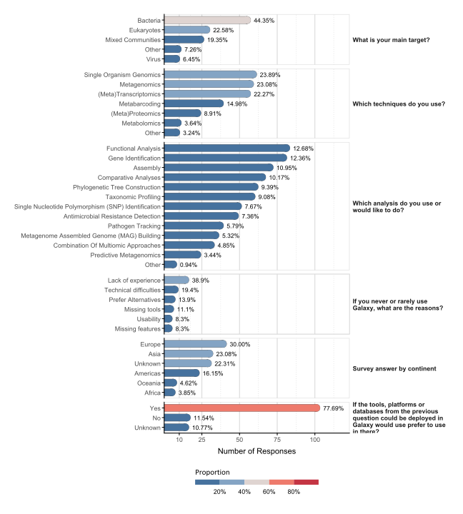

Code
library(data.table)
library(stringr)librarieslibrary(data.table)
library(stringr)df <- fread("https://raw.githubusercontent.com/paulzierep/microgalaxy-survey/refs/heads/main/data/modified_answers.csv")df$V1 <- NULL
df$Timestamp <- df$Timestamp |>
str_split_i("\\ ", 1) |>
lubridate::as_date(format = "%d/%m/%Y")
df$`Which country are you based in?` <- df$`Which country are you based in?` |>
str_to_title() |>
str_split_i("\\,", 1) |>
str_squish() |>
str_replace("Bazil", "Brazil") |>
str_replace("Hunagry", "Hungary") |>
str_replace("England", "United Kingdom")df$Continent <- df$`Which country are you based in?` |>
countrycode::countrycode(origin = "country.name", destination = "continent")coi <- c(
"Timestamp",
"What is your main target?",
"Which techniques do you use?",
"Which analysis do you use or would like to do?",
"Galaxy Obstacles",
"Which country are you based in?",
"Continent",
"If the tools, platforms or databases from the previous question could be deployed in Galaxy would use prefer to use in there?"
)
df_1 <- df[, coi, with = FALSE]
colnames(df_1) = c(
"Timestamp",
"MainTarget",
"Techniques",
"Analysis",
"ReasonNotUse",
"Country",
"Continent",
"PreferenceToUse"
)p1 <- df_1$MainTarget |>
str_remove_all("\\(|Protozoa, Helminths|Plasmodium falciparum|\\)") |>
str_to_title() |>
str_replace("Viruses", "Virus") |>
str_replace("And Fungal Pathogens", "Fungal Pathogens") |>
str_split("\\,") |>
lapply(str_squish) |>
lapply(function(x) data.table("target" = x)) |>
rbindlist(idcol = "id")
p1 <- p1[which(target != ""), by = target, .(N = id |> unique() |> length())]
p1$group <- ifelse(p1$N > 1, p1$target, "Other")
p1 <- p1[, by = group, .( N = N |> sum())]
p1$Prop <- p1$N / sum(p1$N)p2 <- df_1$Techniques |>
str_to_title() |>
str_remove("I Am Trying To Learn! Mostly Outsourced To Service Providers But Need To Learn As I Have Observed Inconsistent Results") |>
str_remove_all("Amplicon|\\/") |>
str_replace("Chip-Seq", "ChIP-seq") |>
str_replace("Proteomics Or Metaproteomics", "(Meta)Proteomics") |>
str_replace("Transcriptomics Or Metatranscriptomics", "(Meta)Transcriptomics") |>
str_replace("Metatranscriptomics", "(Meta)Transcriptomics") |>
str_replace("Single Organism Transcriptomics", "(Meta)Transcriptomics") |>
str_replace("Md Simulations", "MD simulations") |>
str_split("\\,") |>
lapply(str_squish) |>
lapply(function(x) data.table("technique" = x)) |>
rbindlist(idcol = "id")
p2 <- p2[which(technique != ""), by = technique, .(N = id |> unique() |> length())]
p2$group <- ifelse(p2$N > 1, p2$technique, "Other")
p2 <- p2[, by = group, .( N = N |> sum())]
p2$Prop <- p2$N / sum(p2$N)p3 <- df_1$Analysis |>
str_to_title() |>
str_replace("Gwas", "GWAS") |>
str_replace("Mag", "MAG") |>
str_replace("Snp", "SNP") |>
str_replace("Mlst", "MLST") |>
str_replace("MAGs Building", "Metagenome Assembled Genome (MAG) Building") |>
str_replace("SNP Identification", "Single Nucleotide Polymorphism (SNP) Identification") |>
str_replace("Transcriptome Assembler", "Transcriptome Assembly") |>
str_split("\\,") |>
lapply(str_squish) |>
lapply(function(x) data.table("analysis" = x)) |>
rbindlist(idcol = "id")
p3 <- p3[which(analysis != ""), by = analysis, .(N = id |> unique() |> length())]
p3$group <- ifelse(p3$N > 1, p3$analysis, "Other")
p3 <- p3[, by = group, .( N = N |> sum())]
p3$Prop <- p3$N / sum(p3$N)p4 <- df_1$ReasonNotUse |>
str_split("\\,") |>
lapply(str_squish) |>
lapply(function(x) data.table("reason" = x)) |>
rbindlist(idcol = "id")
p4 <- p4[which(reason != ""), by = reason, .(N = id |> unique() |> length())]
p4$Prop <- p4$N / sum(p4$N)p5 <- df_1[, by = Continent, .N]
p5$Continent <- p5$Continent |> str_replace_na("Unknown")
p5$Prop <- p5$N / sum(p5$N)p6 <- df_1[, by = PreferenceToUse, .N]
p6[which(PreferenceToUse == "")]$PreferenceToUse = "Unknown"
p6$Prop <- p6$N / sum(p6$N)df_plot <- list(
"What is your main target?" = p1,
"Which techniques do you use?" = p2,
"Which analysis do you use or would like to do?" = p3,
"If you never or rarely use Galaxy, what are the reasons?" = p4,
"Survey answer by continent" = p5,
"If the tools, platforms or databases from the previous question could be deployed in Galaxy would use prefer to use in there?" = p6
) |>
lapply(function(x) {
colnames(x) <- c("ylabel", "N", "Prop")
x <- x[order(-N)]
x$label <- x$Prop |> round(digits = 4) |> scales::percent()
return(x)
}) |>
rbindlist(idcol = "question")librarieslibrary(ggplot2)
library(ggh4x)
library(shadowtext)
library(tidytext)
library(paletteer)
library(extrafont)df_plot$question2 <- df_plot$question |> str_wrap(width = 30)
df_plot$question2 <- df_plot$question2 |> factor(levels = df_plot$question2 |> unique())
gr <- df_plot |>
ggplot(aes(x = N, y = reorder_within(ylabel, N, question2))) +
geom_point(size = 4.65, aes(fill = Prop), shape = 21, stroke = .25, color = "grey25") +
geom_col(width = .75, aes(fill = Prop), lineend = "round", color = "grey25", linewidth = .15) +
geom_point(size = 4.31, aes(fill = Prop, color = Prop), shape = 21, stroke = .25) +
geom_shadowtext(aes(label = label), size = 3, hjust = 0, vjust = .5, position = position_nudge(x = 4.5),
bg.r = .05, bg.color = "white", color = "black") +
scale_y_reordered() +
scale_x_continuous(expand = c(0, 0),
limits = c(0, 123),
breaks = c(10, 25, 50, 75, 100),
minor_breaks = c(17.5, 37.5, 62.5, 87.5, 112.5)) +
facet_grid2(vars(question2), scales = "free_y", space = "free_y") +
scale_fill_stepsn(colors = paletteer_c("ggthemes::Red-Blue Diverging", 5, direction = -1),
breaks = c(.2, .4, .6, .8),
limits = c(0, 1),
labels = scales::percent,
guide = guide_colorsteps(barwidth = unit(12, "lines"),
barheight = unit(.5, "lines"))) +
scale_color_stepsn(colors = paletteer_c("ggthemes::Red-Blue Diverging", 5, direction = -1),
breaks = c(.2, .4, .6, .8),
limits = c(0, 1),
guide = "none") +
# scale_fill_gradient(low = "#4E79A7" |> lighten(.25), high = "#E15759" |> darken(.3)) +
# scale_color_gradient(low = "#4E79A7" |> lighten(.25), high = "#E15759" |> darken(.3)) +
theme_minimal() +
theme(
# legend.position.inside = TRUE,
legend.position = "bottom",
legend.title.position = "top",
legend.title = element_text(family = "Calibri"),
strip.clip = "off",
strip.text.y.right = element_text(face = "bold", angle=0, vjust=.5, hjust = 0),
strip.background = element_blank(),
axis.title.y = element_blank(),
axis.title.x = element_text(margin = margin(t = 5)),
panel.grid.major.y = element_blank(),
panel.grid.minor.x = element_line(color = "grey85", linetype = "dotted", lineend = "round"),
panel.grid.major.x = element_line(color = "grey85"),
panel.background = element_rect(fill = NA, color = "grey85"),
axis.line = element_line(lineend = "round"),
axis.ticks = element_line(lineend = "round"),
plot.margin = margin(20, 20, 20, 20),
plot.background = element_rect(fill = "transparent", color = NA)
) +
labs(x = "Number of Responses", fill = "Proportion")
gr